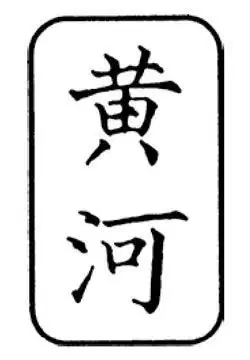
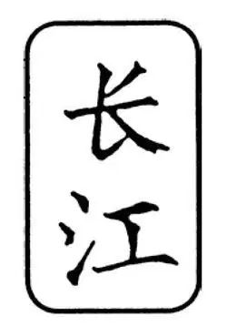

21
All the Way Around the World in China
中国人的世界

ABOUT the same time that Gautama was starting Buddhism in India, a man in China, a great wise man named Confucius, was teaching the people of China what they ought to do and what they ought not to do. His teachings filled several books and formed what came to be a way of life for the Chinese and many other people in Asia.
Confucius taught that people should be loyal and obey their kings and also that rulers had a duty to take care of their people. He believed that this would bring peace and harmony in China. He taught people to obey their parents and teachers and to honor their ancestors. This sounds something like one of the Ten Commandments: “Honor thy father and thy mother.”
Confucius also taught the Golden Rule, the same Golden Rule that you are taught today, only instead of saying, “Do unto others as you would have others do unto you” he said, “Do not do to others what you would not want others to do to you.”
China had one of the earliest civilizations in the world. Maybe you remember the name of the river that was the cradle of Chinese civilization. It was the Huang River, or Yellow River, that overflowed with thick yellow mud. This mud fertilized the soil where people grew their crops. People settled first along the Huang and then also along the Yangtze River, also called the Long River.

Huang River （黄河）

Yangtze River （长江）
China is very far away from all the other places we have been talking about. It was isolated from the rest of the ancient world. The Himalaya Mountains lie to the west and the Gobi Desert to the north. On the south are more mountains and seas. On the east lies the great Pacific Ocean that stretches all the way to the west coast of the United States. In the days before large sailing ships and way before airplanes, the Chinese had very little contact with any other people. So Chinese culture developed all by itself.
We know the Chinese had a written language as early as 1500 B.C. at a time when the Shang dynasty ruled northern China. You can see that Chinese writing is still very different from the writing in any other country. The Chinese never switched to an alphabet but continue to use characters—a different character for each word. It must be very hard to learn to read and write Chinese.
We have to learn only twenty-six letters. Boys and girls in China have to memorize about six hundred characters before they can do even basic reading and writing.
Many inventions were made and used in China before the rest of the world ever heard of them. Around the time of Christ, the Chinese were making silk, porcelain, and paper. By this time, the Chinese did trade with some of the other people we have read about. Chinese silk was in great demand by Romans and their neighbors around the Mediterranean.
By 600 A.D. the Chinese had invented printing and used printing presses. A few centuries later, they were making the magnetic compass, which was such a great help to the sailors. Do you know what a compass is? It's a little gadget with a needle that always points to the north. Knowing which way was north made it possible for sailors to know which way they were sailing—even when they were way out in the ocean, too far from land to be able to see the shore. Maybe someone in your class or neighborhood has a compass and can share it for everybody to see.
The Chinese also figured out how to immunize against the dread disease smallpox. They also were first to discover how to make explosive powder, the kind that we use both for gunpowder and for fireworks.
From all this, you can see that the Chinese may have been relatively isolated, but they were very busy making things that the rest of the world found really exciting when people learned about them.
【中文阅读】
和乔答摩在印度创立佛教差不多同时，中国有位叫孔子的智者正在教他的人民应该做什么和不该做什么。他的教导记载在几本书中，逐渐成为中国人和其他许多亚洲人的一种生活方式。
孔子教导人们应该忠于和服从他们的君主，同时认为，统治者有责任爱护自己的人民。他相信这样做会给中国带来和平与安宁。他教导人们要听从自己的父母和老师，并敬奉自己的祖先，这听起来有点像圣经“十诫”中的一条：“当孝敬父母”。
孔子还教导了一条如何为人的“金科玉律”，和你在圣经中学过的那条“金科玉 律”意思相同，只不过说法不同，圣经说“你愿意人怎样待你，你也要怎样待人”，而孔子曰：“己所不欲，勿施于人”。
中国也是世界上最早的文明发源地之一。也许，你还记得那条孕育中华文明的河流叫什么吧。它叫黄河，里面充满着大量黄色的泥沙。这种泥沙可以使土壤肥沃，有利庄稼生长。人们最初在黄河沿岸定居下来，后来又有人在扬子江沿岸定居下来，扬子江又叫长江。
中国离我们前面说过的那些文明古国很远。它和古代世界的其他地方隔离开了。中国的西边是喜马拉雅山，北边是戈壁沙漠，南方有崇山峻岭和茫茫大海，东临广阔的太平洋，太平洋一直延伸到美国的西海岸。在没有大型航船和飞机的古代，中国人和世界上其他民族没有什么接触。因此，中华文明完全是独立发展起来的。
我们知道，早在公元前1500年中国人就有了文字，当时，商王朝统治着中国的北方。你能看出中国的文字现在仍然和其他国家的文字很不一样。中国文字从来没有转变为字母，而是继续使用文字——每个文字的字符都不一样。学习读写中国文字肯定是很难的。
我们只需要学习二十六个字母。中国的孩子们甚至在会基本的读写之前就要记住大约六百个汉字。
有很多发明，世界上其他地方的人还听都没听说过，而在中国早就产生并开始使用了。大约在基督时代，中国人已经在制造丝绸、瓷器和纸张了。那时，中国人确实和我们前面谈到过的一些国家有了贸易。中国丝绸远销罗马和地中海沿岸，大受欢迎。
到了大约公元600年，中国人已经发明了印刷术，还使用了印刷机。又过了几个世纪，他们就在制造“磁针罗盘”（俗称“指南针”）了，为航海人提供了极大的帮助。你知道指南针是什么吗？它是一种小巧装置，里面有个指针总是指向北方。只要知道哪个方向是北，航海人就可以知道他们正在航行的方向——即使他们航行在远离陆地的海洋上，远得无法看见海岸线。可能你的同学或邻居家的孩子谁有指南针，可以请他（她）拿出来给大家看一看。
中国人还想出了接种预防天花的办法，天花是一种让人恐惧的传染性疾病。也是他们最先发现了怎样制造火药，现在我们用火药做弹药和烟花。
从以上所述，你可以知道，中国人也许相比较而言与世隔绝，但是他们忙于发明制造各种各样的东西，这些东西传播到世界各地，极大地引起了人们的兴趣。